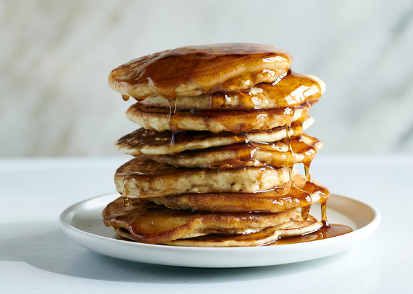

PANCAKES

INGREDIENTS
- 1 ½ cups/360 milliliters nondairy milk of your choice
- 2 teaspoons apple cider vinegar or white vinegar
- 1 tablespoon neutral oil (such as safflower, grapeseed or canola), plus more for frying the pancakes
- 2 cups/255 grams unbleached, all-purpose flour
- 2 tablespoons cane sugar
- 1 ½ teaspoons baking powder
- ½ teaspoon baking soda
- ½ teaspoon kosher salt or 1/4 teaspoon fine sea salt
- Maple syrup or vegan butter (optional)
INSTRUCTIONS
- In a medium size bowl, combine the nondairy milk and vinegar. Add 1 tablespoon oil, mix to combine and aside.
- In a large mixing bowl, whisk together the flour, sugar, baking powder, baking soda and salt. Add the wet ingredients to the dry ingredients and mix until no streaks of flour are visible. (A few small clumps in the batter are OK.)
- Oil a griddle or large nonstick skillet and heat it over medium for a few minutes. Avoiding crowding the pan, pour in 1/3 cup portions of batter to make pancakes and let cook until each pancake has formed small bubbles at the surface, 2 to 3 minutes. Flip gently and cook until the pancakes are golden brown on the second side, another 2 to 3 minutes.
- Repeat with all remaining batter, oiling the pan as necessary as you go. Serve with maple syrup, vegan butter or other toppings of choice.
home